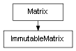

class cymel.core.datatypes.matrix.ImmutableMatrix¶

- class cymel.core.datatypes.matrix.ImmutableMatrix(*args, **kwargs)¶
Bases:
Matriximmutablewrapper forMatrix.Methods:
addT(*args, **kwargs)Add the translation value.
addTranslation(*args, **kwargs)Add the translation value.
adjointIt(*args, **kwargs)Set the cofactor matrix.
adjugateIt(*args, **kwargs)Set the cofactor matrix.
homogenizeIt(*args, **kwargs)Set the matrix obtained by orthonormalizing the 3x3 part.
imulidivsetTranslation(*args, **kwargs)init3x3(*args, **kwargs)Initialize the 3x3 part.
initT(*args, **kwargs)Clear the parallel component of the 4th line.
initTranslation(*args, **kwargs)Clear the parallel component of the 4th line.
invertIt(*args, **kwargs)Set the inverse matrix.
mirrorIt(*args, **kwargs)Sets the mirrored matrix along the specified axis.
orthonormalizeIt(*args, **kwargs)Set the matrix obtained by orthonormalizing the 3x3 part.
set(*args, **kwargs)Set other values.
setAxes(*args, **kwargs)Set the row and column of the 3x3 part and the translation vector for the 4th row.
setAxis(*args, **kwargs)Set the row and column vectors of the 3x3 part.
setColumn(*args, **kwargs)Set column vector.
setColumns(*args, **kwargs)Set all four column vectors.
setElem(*args, **kwargs)Sets the element at the specified position.
setRow(*args, **kwargs)Set the row vector.
setRows(*args, **kwargs)Set all four row vectors.
setT(*args, **kwargs)Set the translation value.
setToIdentity(*args, **kwargs)Set the identity matrix.
subT(*args, **kwargs)Subtract the translation value.
subTranslation(*args, **kwargs)Subtract the translation value.
transposeIt(*args, **kwargs)Set the transposed matrix.
Method Details:
- addT(*args, **kwargs)¶
Add the translation value.
- Parameters:
v (
Vector) – 3D vector of translation.
- addTranslation(*args, **kwargs)¶
Add the translation value.
- Parameters:
v (
Vector) – 3D vector of translation.
- homogenizeIt(*args, **kwargs)¶
Set the matrix obtained by orthonormalizing the 3x3 part.
- Return type:
Matrix(self)
- imulidivsetTranslation(*args, **kwargs)¶
- init3x3(*args, **kwargs)¶
Initialize the 3x3 part.
If you want to initialize all 4x4, you can use
setToIdentity.If you want to obtain a new matrix with only translation components, you can use
asTranslationMatrix.- Return type:
Matrix(self)
- initT(*args, **kwargs)¶
Clear the parallel component of the 4th line.
If you want to obtain a new matrix initialized to something other than 3x3, you can use
as3x3.- Return type:
Matrix(self)
- initTranslation(*args, **kwargs)¶
Clear the parallel component of the 4th line.
If you want to obtain a new matrix initialized to something other than 3x3, you can use
as3x3.- Return type:
Matrix(self)
- mirrorIt(*args, **kwargs)¶
Sets the mirrored matrix along the specified axis.
- Parameters:
mirrorAxis (int) – Reference axis to mirror. Specify either
AXIS_X,AXIS_Y, orAXIS_Z.negAxis (int) – Local axis to orient the opposite of the mirror result so that the determinant (scale) is not reversed. In addition to
AXIS_X,AXIS_Y,AXIS_Z, you can specify None, False, and True. If omitted (True), it will be the same as the mirror reference axis. If False, the 3x3 part will not be reversed. None will reverse all axes from the mirror result.t (bool) – Whether the translation value (4th line) is also inverted.
- Return type:
Matrix(self)
- orthonormalizeIt(*args, **kwargs)¶
Set the matrix obtained by orthonormalizing the 3x3 part.
- Return type:
Matrix(self)
- set(*args, **kwargs)¶
Set other values.
Similar to the constructor, the following values can be specified.
16-value sequence
- Return type:
Matrix(self)
- setAxes(*args, **kwargs)¶
Set the row and column of the 3x3 part and the translation vector for the 4th row.
- Parameters:
vx (
Vector) – X-axis vector to set.vy (
Vector) – Y-axis vector to set.vz (
Vector) – Z-axis vector to set.vt (
Vector) – The translation vector to set. Only this is not affected by the transpose option.transpose (bool) – Set the axis vector of the transposed matrix in the 3x3 part. In other words, False sets the row vector, True sets the column vector.
- setAxis(*args, **kwargs)¶
Set the row and column vectors of the 3x3 part.
- setColumn(*args, **kwargs)¶
Set column vector.
- setColumns(*args, **kwargs)¶
Set all four column vectors.
- setElem(*args, **kwargs)¶
Sets the element at the specified position.
- setRow(*args, **kwargs)¶
Set the row vector.
- setRows(*args, **kwargs)¶
Set all four row vectors.
- setT(*args, **kwargs)¶
Set the translation value.
- Parameters:
v (
Vector) – 3D vector of translation.
- setToIdentity(*args, **kwargs)¶
Set the identity matrix.
- Return type:
self
- subT(*args, **kwargs)¶
Subtract the translation value.
- Parameters:
v (
Vector) – 3D vector of translation.